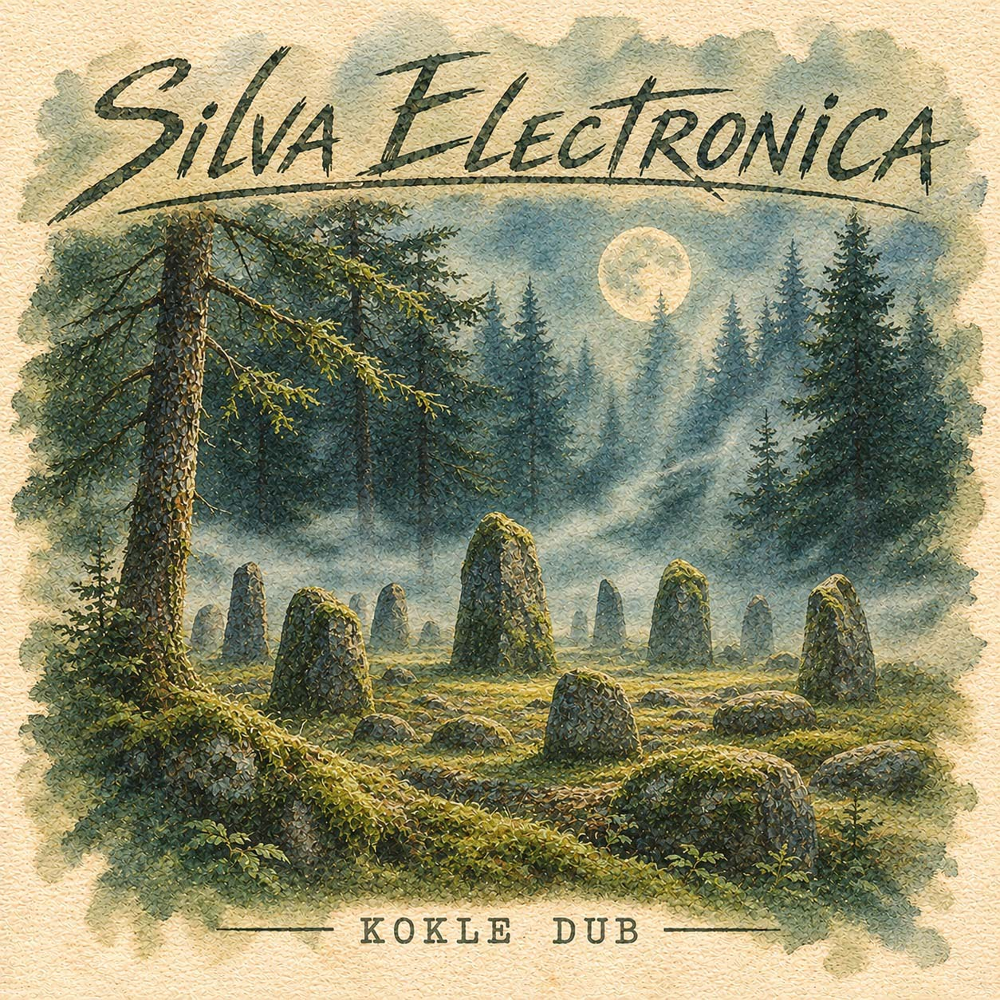

P · 18

Kokle Dub
Этно-электроника · Даунтемпо
СКОРО
Kokle Dub — Silva Electronica (2006). Оцифрованный архив балтийского этно-электронного проекта, предположительно существовавшего в Риге на стыке тысячелетий. Фолк-минимализм, даунтемпо и даб с оригинальной камерностью и аналоговой шероховатостью. Это музыка об обрядах и тишине, о ночной реке и древних каменных кругах.
СКОРО
Ссылки на стриминг появятся ближе к релизу.
ТРЕКЛИСТ
1 АЛЬБОМ
- 01 Kokle Dub
- 02 Daugava Nights
- 03 Baltic Trance
- 04 Fog and Bass
- 05 Akmenų Ratas
- 06 Silva Electronica
2006 · Эмбиент · Этно электроника
1 Альбом